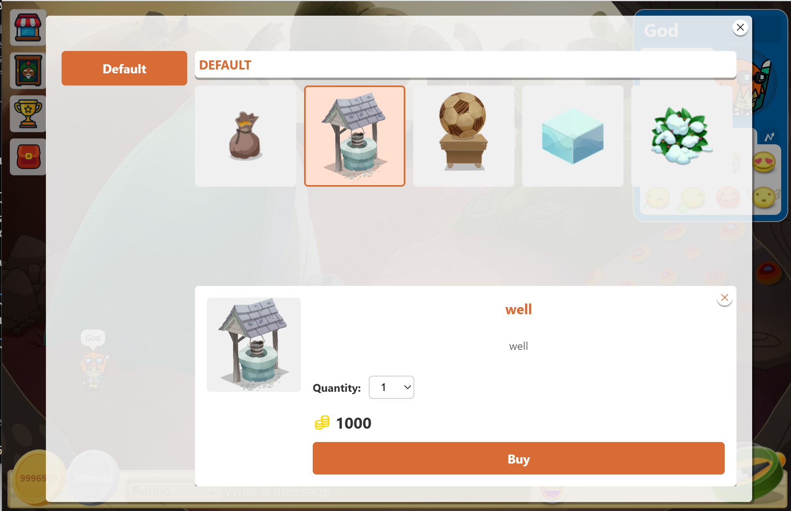

NO DISPONIBLE AÚN
Seguimos trabajando.
La consulta de objetos requiere la API y la base de datos. No se muestran productos, precios ni ventas ficticias.
Protección: no solicitamos datos personales ni simulamos funciones operativas.

Catálogo de objetos, solo lectura · Función sin conexión pública